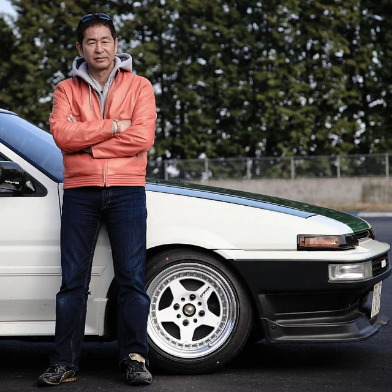
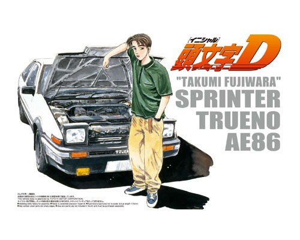
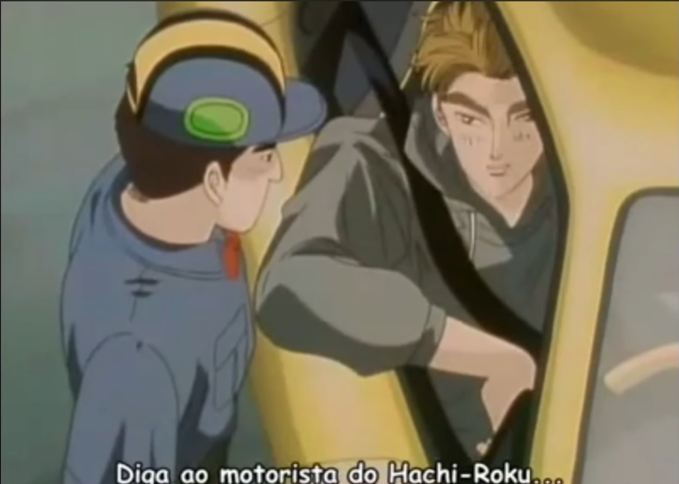
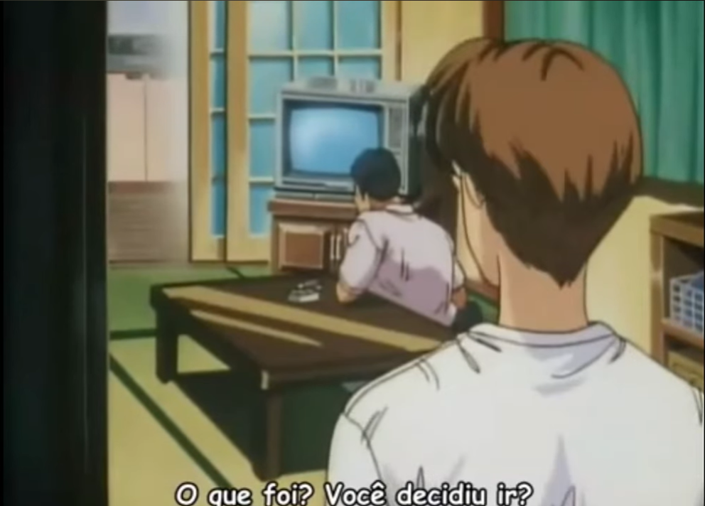
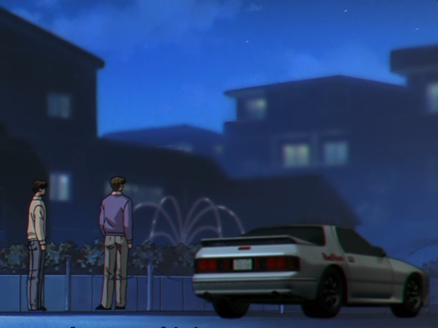

歴史 História

Keiichi Tsuchiya
Tudo começou com Keiichi Tsuchiya, que dirigia seu Toyota Trueno AE86 todos os dias para fazer entregas e usava as estradas sinuosas das montanhas para aprimorar suas habilidades. Seu conhecimento sobre a pista era tão grande que ele vencia facilmente seus adversários na montanha, mesmo usando um carro teoricamente inferior.
Takumi Fujiwara
A história de Initial D acompanha o jovem Takumi Fujiwara, que trabalha em um posto de gasolina em sua cidade. Durante as madrugadas, ele é encarregado por seu pai de realizar entregas diárias de tofu no topo do Monte Akina.

Para garantir que a mercadoria não seja danificada pelas curvas, seu pai coloca um copo de água no painel do carro, exigindo que Takumi não derrame uma única gota durante o trajeto. Ao realizar esse percurso rigoroso todos os dias, ele acaba desenvolvendo uma habilidade excepcional de controle do carro e transferência de peso de forma totalmente inconsciente, impulsionado apenas pelo desejo de terminar logo o trabalho para voltar para casa e dormir.
O verdadeiro talento do jovem é revelado quando, em uma de suas entregas de madrugada, ele ultrapassa sem esforço um moderno carro esportivo na descida do Monte Akina. O piloto adversário tenta recuperar a posição, mas é vencido pelo medo das curvas estreitas e pela velocidade absurda do velho Toyota de entregas.

Na manhã seguinte, o motorista ultrapassado se revela como Keisuke Takahashi, que aparece no posto de gasolina para desafiar o Trueno que ele acreditava ser apenas uma lenda local para uma corrida oficial.
Inicialmente desinteressado pelo mundo automobilístico, Takumi só aceita o desafio por um motivo pessoal: ele queria o carro emprestado para um encontro na praia com uma garota chamada Natsuki Mogi. Conhecendo a habilidade do filho, seu pai concorda em emprestar o veículo com o tanque cheio, mas impõe uma única condição: Takumi teria que correr na montanha e vencer Keisuke Takahashi.

ele vence Keisuke de forma surpreendente e percebe, pela primeira vez, que pilotar é algo que realmente gosta de fazer.
A partir desse momento, Takumi aprimora cada vez mais suas habilidades e acaba conhecendo Ryosuke Takahashi, irmão de Keisuke e um brilhante estrategista e analista de corridas. Após acompanhar a evolução do garoto, Ryosuke propõe a Takumi que integre o Project D, uma iniciativa de elite criada para transformar as corridas de rua em um cenário extremamente técnico, calculista e focado em dados.
